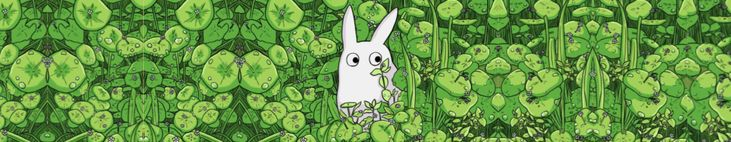

Welcome to my fansite dedicated to Studio Ghibli! I created this website because I'm a huge fan of the beautiful animated films produced by this studio. The magic of Studio Ghibli is something that has touched the hearts of people all over the world. Their movies, from the heartwarming "My Neighbor Totoro" to the mesmerizing "Spirited Away", have a unique ability to transport us to enchanting worlds filled with unforgettable characters and profound life lessons. Through this website, I hope to share my love for Studio Ghibli and provide a space for fellow fans to come together and celebrate the magic of animation.
In addition to being a Studio Ghibli enthusiast, I'm also a player of the game "Ni no Kuni". This breathtaking RPG game, with its stunning visuals and captivating storyline, has been a source of endless enjoyment for me. The game's collaboration with Studio Ghibli for character design and world creation has added an extra layer of magic to the experience. "Ni no Kuni" is a testament to the enduring influence of Studio Ghibli's creativity beyond the realm of cinema.